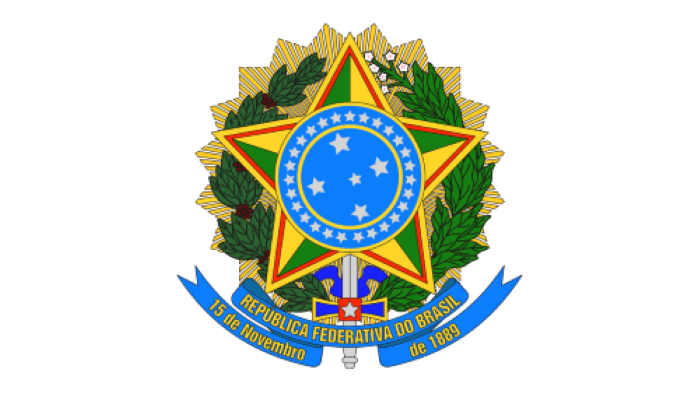
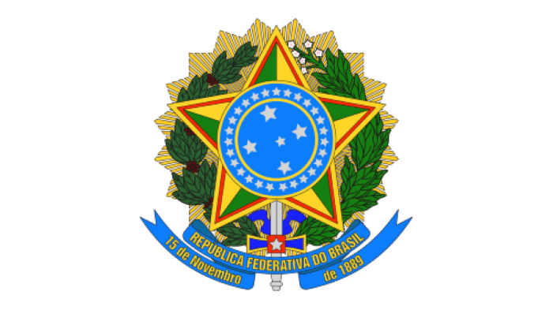

Símbolos do Brasil são símbolos nacionais que representam oficialmente a nação brasileira, que, conforme a Lei dos Símbolos Nacionais do Brasil,
são quatro símbolos oficiais: a Bandeira; o Brasão de Armas; o Hino, e; o Selo.
Pela lei n.º 5 700, de 1.º de setembro de 1971, são consideradas as cores nacionais o verde e o amarelo,
que podem ser usadas sem quaisquer restrições, inclusive associadas a azul e branco. E sob o decreto 51 564 de 3 de outubro de 2002,
o sabiá-laranjeira foi tornado a ave-símbolo do Brasil, figurando no emblema oficial da Copa das Confederações de 2013, que foi realizada no país.
 
